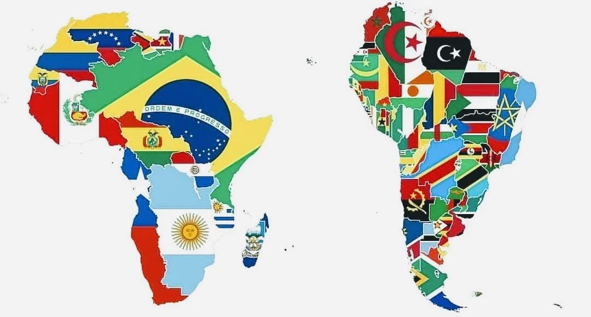

Comparação América do sul e Africa

Os países sul-americanos - especialmente o Brasil - foram os primeiros a serem povoados por imigrantes africanos em todo o continente americano. A imigração africana para as Américas pode ter tido início no século XVI, mas mesmo antes de 1500 os negros já tinham navegado com Cristóvão Colombo em sua primeira viagem em 1492, e é provável que os primeiros exploradores espanhóis e portugueses também tiveram a companhia de negros africanos nascidos e criados na Península Ibérica. Nos 500 anos seguintes, milhões de imigrantes africanos foram trazidos para o Novo Mundo como escravos. Hoje seus descendentes são minorias étnicas expressivas em vários países da América do Sul. Ao longo dos séculos, a população negra contribuiu para a diversidade cultural de suas respectivas sociedades e, dessa forma, influenciaram profundamente todos os aspectos da vida na América do Sul.
Diferenças
- Geografia: América do Sul é mais contígua, enquanto a África é fragmentada.
- Colonização: América do Sul foi principalmente colonizada por Espanha e Portugal, enquanto a África foi colonizada por várias potências europeias.
- Línguas: América do Sul tem predominância de espanhol e português, enquanto a África é mais diversificada linguisticamente.
- Economia: América do Sul tem economia mais diversificada, enquanto muitos países africanos dependem mais de recursos naturais.
- Cultura: Embora ambas tenham rica diversidade cultural, há variações em música, dança, culinária e tradições religiosas.
Semelhanças
- Biodiversidade: Ambas abrigam uma vasta variedade de espécies.
- Desafios socioeconômicos: Enfrentam problemas semelhantes como pobreza, desigualdade social e ambiental.
- Influência colonial: Ambas foram profundamente influenciadas pela colonização europeia, afetando aspectos políticos e sociais até hoje.